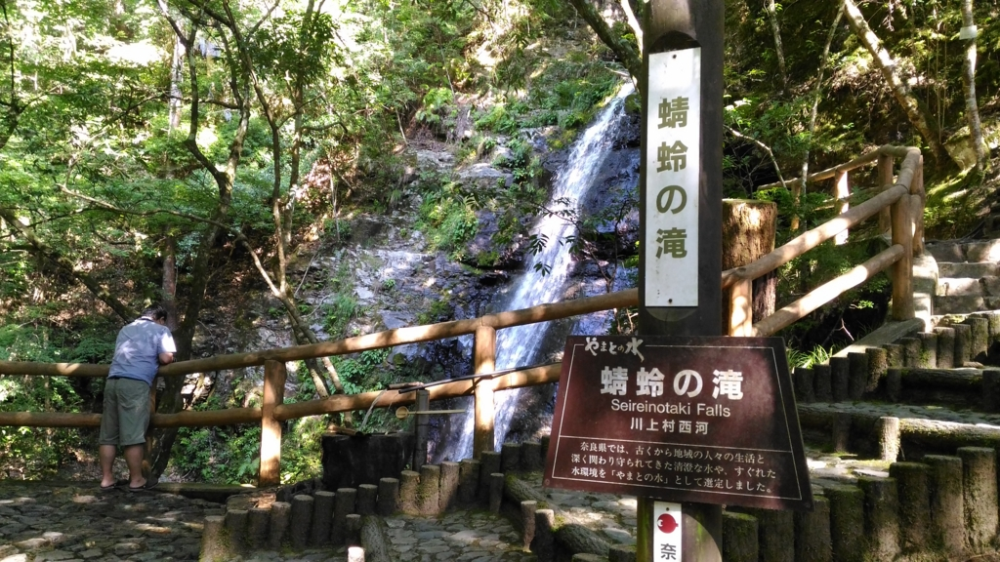
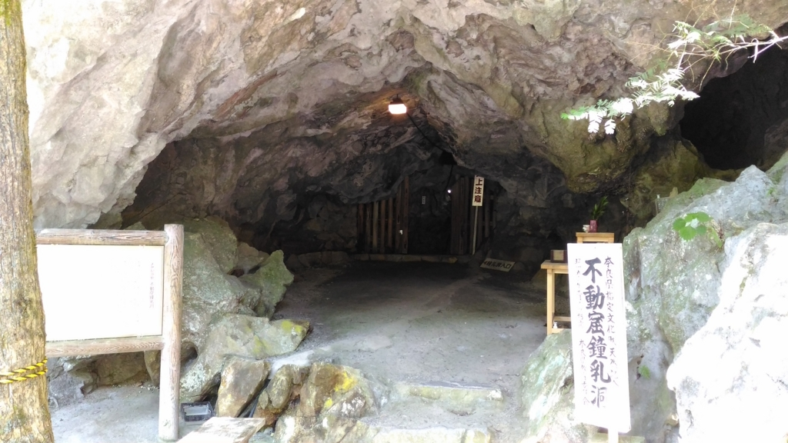
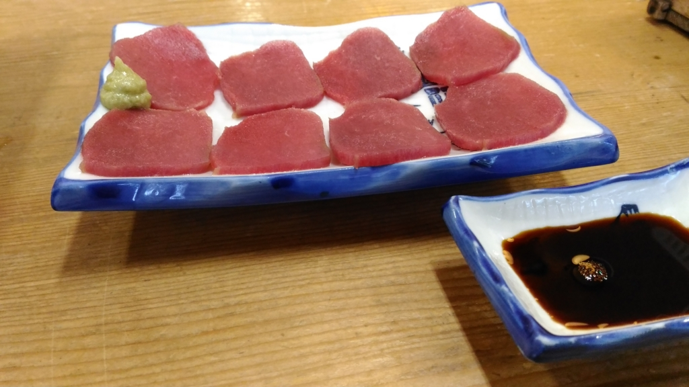

奈良で奈良ならではのことをしてきた
公開日：
お盆は墓参りとばあちゃんの見舞いに行ってきた。奈良で泊めてくれた N 氏に感謝。おっちゃんとおばちゃんにもよくしていただいた。奈良のちょっと南の方にも連れてってもらったで*1。
蜻蛉（せいれい）の滝

奈良県川上村（ぶっちゃけ、この辺りは吉野とかしか知らんわ……）にある滝。高さ約50メートル。
第21代雄略天皇がこの地へ狩りに訪れたとき、恐れ多くも天皇のヒジにアブが食いついた。それをたまたまみていた蜻蛉（とんぼ）さんが激怒し、スーパーサイヤ人化。強襲して、この不埒なアブを噛み殺したのだそうな。それを嘉して「蜻蛉の滝」と名づけられたのだそう。また、この地を“蜻蛉野（あきつの）”と呼ぶようになった。以来、歴史上の著名人が数多く訪れているという。わしもこれでその列の端くれに加わったというわけやな。
ちなみに、わいはここで蚊に噛まれた。略して、カニカマ。とんぼ氏は助けに来てくれなかった。
不動窟鍾乳洞

同じく川上村にある。
ここのいいところは、なんといってもバリ涼しいことやな。わいが行ったときで10度ぐらい。今年のお盆はクソ暑かったけれど、ここは本当に天国。
なかはとても狭くて滑りやすく、ところどころ四つん這いにならないと通れない。ちょっとしたアドベンチャー気分が味わえる。子どもなんかは喜びそうだけど、十分気をつけなければならない。
奥には不動明王が鎮座していて、ご利益ありそう。とくにこれといった願望もなかったけれど、表のお堂でお賽銭を投げて、三跪九叩頭の礼（いや、実際には二拝二拍手一礼ぐらいだけど）。割と何でもかなえてくれるらしいよ。
入之波温泉（しおのはおんせん）
これも川上村。褐色のぬるい炭酸重曹銭で、割となんにでも効くとのこと。効用が書かれた看板によると、ヒステリーなんかにも効くらしい。マジかよ。ぬるいので冬はちょっと寒いかもしれない（大事なことなので2度言った）。
山鳩湯という宿でお湯をいただいたのだけど、今回の目的はそれよりもコレ。しし鍋さんですな。真昼間から温泉入ってビール飲んで、サイコー！*2

ついでに鹿肉もお刺身でいただいた。奈良ならでは。奈良ならでは。

調子に乗って鴨肉の丼に……

先ほどのしし鍋の雑炊まで食べた。さすがに食いすぎて眠くなったので、お昼過ぎにさっさと N 氏宅へ帰り、涼しい部屋でアニメ見ながらゴロゴロと過ごした。サイコー！